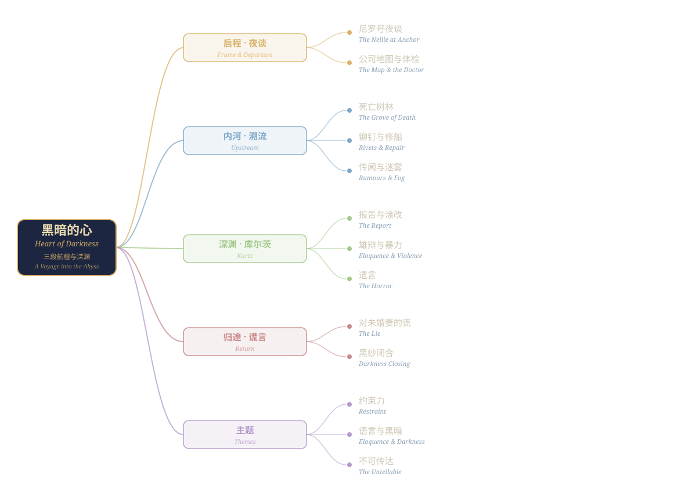

黑暗的心
〇 · 书籍信息
基本信息
| 书名 | 《黑暗的心》（Heart of Darkness）——「黑暗」在书中至少指三层：非洲腹地、欧洲帝国的掠夺机器、人心深处 |
|---|---|
| 作者 | 约瑟夫·康拉德（1857–1924），波兰裔英国作家。二十岁前一句英语不会说，以第三语言写出英文散文大师级文风；1890 年一次刚果之行成为本书的全部地基 |
| 出版 | 1899 年在《布莱克伍德杂志》分三期连载，1902 年成书；篇幅不长，却成为二十世纪现代主义的起点之一（T.S.艾略特《荒原》题词即取自本书） |
| 体裁 | 框架叙事（frame narrative）+ 心理航程小说。故事全部由船上夜谈的马洛讲出——「讲述不可讲述之物」是全书的形式母题 |
| 一句话 | 马洛溯河而上寻找传奇代理人库尔茨，找到的却是一个被权力与荒野彻底剥掉约束的灵魂——欧洲的文明外衣，在这条河上只剩一层漆。 |
一 · 核心主题总览
三段航程的情节线之下，是四组互相咬合的概念：① 双河镜像（全书结构之钥）
小说开场在泰晤士河口的夜谈，马洛却把这条「文明的母亲河」讲成古罗马人眼中「世界上黑暗的地方之一」；结尾河上又蒙起黑纱。刚果河上发生的一切，随时可能在泰晤士河重演——黑暗不是地理，是结构。
② 约束力（restraint，全书关键词）
康拉德反复追问：人凭什么不堕落？答案不是道德而是「约束」——工作、代码、制度、同伴的目光。马洛靠「修船」保住神志，库尔茨离开一切约束，就「向自己的灵魂深处喊话」并听到了回答。约束力是文明的最小单位。
③ 语言与黑暗（雄辩的深渊）
库尔茨是个天才的雄辩家——嗓音、报告、演讲样样惊人，最后却让雄辩为最黑暗的目的服务。康拉德的判词冷峻：语言的华美与行为的光明毫无必然关系；越会说话的人，越需要被审查。
④ 不可传达（形式即主题）
马洛多次承认自己在「试图讲一场梦」——语言抵达不了经验的核心。全书因此不直接描写深渊，只写雾、写沉默、写听不清的呼喊。留白不是偷懒，是作者对「不可言说」的诚实。
二 · 第一段航程 尼罗号上的夜谈—— 泰晤士河 · 公司 · 启程 ——
框架叙事 · 马洛开讲
夜色中，五条船抛锚在泰晤士河口等潮水，讲述者「我」与四名同伴听水手马洛讲故事。马洛指着暮色说：这片土地也曾经是「世界上黑暗的地方之一」——罗马人来时，伦敦正是蛮荒。随后他讲起自己受雇于欧洲贸易公司、受命深入刚果腹地接回失踪代理人库尔茨的经过。出发前他见过公司总部里织机的嗡鸣、见过地图上的色块（黄色即刚果河域）、见过给水手量头围的怪医生——「我在那儿时从不量两次」。启程段全是伏笔：地图、织机、颅骨测量，每个细节都是后文深渊的预告片。
◆ 语言学习 · 框架 · 夜谈
| sombre /ˈsɒmbə/ | adj. 阴沉昏暗的 —— 例句：the sombre mood of the evening（第 1 部分开场）。与 gloomy 近义但更书面；名词 sombreness |
|---|---|
| flicker /ˈflɪkə/ | n./v. 明灭，闪烁 —— 例句：We live in the flicker.（第 1 部分）火把的明灭比喻文明短暂；名词高频搭配 candle flicker |
| taint /teɪnt/ | n. 污点，腐坏痕迹 —— 例句：a taint of death in lies（第 1 部分）。动词 taint「玷污」；与 stain 辨析：taint 偏内在渗透 |
| inscrutable /ɪnˈskruːtəbl/ | adj. 难以看透的 —— 例句：the inscrutable jungle（第 1 部分）。in-（不）+ scrutiny（细看）；GRE 高频词 |
句型 ｜ 「I hate, detest, and can't bear a lie.」——三个同义动词按强度升级排列（恨→嫌恶→忍不了），再补一分词短语给理由。这种「三连升级」是英文强调修辞的标准件：I love, adore, and can't live without it. 照葫芦画瓢即可用。
死亡树林与铆钉插曲
抵达非洲海岸后，马洛换乘小艇上溯；沿海采矿站里他目睹黑奴在垂死——他称之为「死亡树林」（the Grove of Death）。到了中枢站，工程停摆、设备锈烂，轮船沉在河底；唯一在动的是替他打捞与修复的执念。他听遍各色「朝圣者」（公司职员被反讽地如此称呼）闲话库尔茨：象牙大王、天才、未来经理——传闻在 rumor 中越堆越高，人还未出场，神话已经先行。马洛的整段内河航程，一半开船，一半消化这些互相矛盾的传说。
◆ 语言学习 · 中枢站
| pestilential /ˌpestɪˈlenʃl/ | adj. 恶臭致病性的 —— 例句：the pestilential air（死亡树林段）。词根 pest（瘟疫），同族 pestilence 瘟疫 |
|---|---|
| grove /ɡrəʊv/ | n. 小树林 —— 例句：the grove of death（第 1 部分末）。与 forest 辨析：grove 小而成片，常带修辞色彩（olive grove） |
| pilgrim /ˈpɪlɡrɪm/ | n. 朝圣者（反讽）—— 例句：the pilgrims（公司职员的统称）。康拉德故意用宗教词写掠夺者：神圣词汇包装贪婪行当 |
| surreptitious /ˌsʌrəpˈtɪʃəs/ | adj. 偷偷摸摸的 —— 例句：surreptitious listening（传闻段）。surrep-（暗中夺取）+ -itious；与 stealthy 辨析：更书面 |
句型 ｜ 「It seems to me I am trying to tell you a dream.」——it seems to me（对我而言）+ trying to（努力而未必成功）的组合，是「降低断言强度」的经典让步式开头。讲不确定的东西（梦、感受、假设）用它最稳：It seems to me I am trying to describe a feeling, not a fact.
三 · 第二段航程 溯流而上—— 传闻 · 迷雾 · 象牙 ——
河上的传说
修好船后，马洛带着经纪人、雇了食人族水手继续上溯。两个月里，库尔茨的传说持续加码：他写报告、他收象牙、他「每个站都该是通往美好前景的灯塔」。中途浓雾围船，雾中传来尖啸——雾是本书最重要的幕布：看不清，才最可怕。同船的食人族水手纪律严明、克制有力，反衬出岸上白人的失序——马洛那句判词在此落下：你的力量不过是他人软弱造成的偶然。
◆ 语言学习 · 传闻与雾
| ivory /ˈaɪvəri/ | n. 象牙 —— 例句：the word ivory（第 2 部分反复回响）。全书真正的主角货币；引申义 ivory tower 象牙塔同源 |
|---|---|
| restraint /rɪˈstreɪnt/ | n. 约束，克制 —— 例句：no restraint（第 2–3 部分核心词）。动词 restrain；restraint on sb/sth 搭配高频 |
| ludicrous /ˈluːdɪkrəs/ | adj. 荒唐可笑的 —— 例句：ludicrous exaggerations（传闻段）。与 ridiculous 近义但更冷峻；名词 ludicrousness |
| sordid /ˈsɔːdɪd/ | adj. 肮脏卑鄙的 —— 例句：sordid buccaneers（第 2 部分）。sordid affairs / sordid details 高频搭配，书面语首选 |
句型 ｜ 「Your strength is just an accident arising from the weakness of others.」——主干极短（Your strength is an accident），arising from 现在分词短语作后置定语。把「强弱的因果」压缩成一个 accident，是英文冷评的极致句式：Your confidence is just an accident arising from your ignorance.
库尔茨的档案
接近内站前，马洛读到库尔茨为「肃清野蛮习俗国际社」写的十七页报告——文笔雄辩、结论崇高，末页却由库尔茨亲手补上一行颤抖的字：「消灭所有这些畜牲！」（Exterminate all the brutes!）。随后而来的是树桩上的人头——库尔茨的「审美收藏」。疯疯癫癫的俄国水手对他崇拜到五体投地。报告的两半（崇高论证＋兽性结尾）就是库尔茨本人的一体两面：文明话语与丛林行为，共用同一支笔。
◆ 语言学习 · 报告与人头
| eloquence /ˈeləkwəns/ | n. 雄辩，口才 —— 例句：his eloquence（第 2–3 部分）。形容词 eloquent；an eloquent silence「雄辩的沉默」是高级用法 |
|---|---|
| brute /bruːt/ | n. 野兽，畜生 —— 例句：Exterminate all the brutes!（报告结尾）。brutal/brutality 同族；brute force「蛮力」 |
| impenetrable /ɪmˈpenɪtrəbl/ | adj. 无法穿透的 —— 例句：an impenetrable darkness（第 3 部分结尾）。penetrate 的否定式；军事、心理语境通用 |
| monstrous /ˈmɒnstrəs/ | adj. 怪异的，骇人的 —— 例句：a thing monstrous and free（第 2 部分）。名词 monster；monstrous 同时含「巨大」与「邪恶」双义 |
习语 ｜ in the heart of darkness——heart of 指「深处/核心」，heart of the matter「问题的核心」、heart of the city「市中心」。康拉德把地理与心理焊进一个短语：地名即心名。这个结构今天仍在用：in the heart of the crisis.
四 · 第三段航程 深渊与归途—— 遗言 · 判决 · 谎言 ——
库尔茨之死
马洛终于见到库尔茨：形容枯槁的雄辩家，已被「荒野找到并宣判」。载象笔回程的船上，库尔茨趁夜爬向丛林——马洛拦下他，却没有揭发。病榻上，库尔茨细致地重温自己的一生，最后喊出那声著名的遗言。马洛事后总结：他做了总结、下了判决——对一生的彻底幻灭化作一声「太可怕了」。船顺流而下，褐色河水湍急地冲出黑暗的心脏，归途比来时快一倍：离开深渊，从来比进入容易。
◆ 语言学习 · 遗言
| horror /ˈhɒrə/ | n. 恐怖，惊骇 —— 例句：The horror! The horror!（第 3 部分遗言）。与 terror 辨析：horror 偏心理震撼，terror 偏威胁性恐惧 |
|---|---|
| verdict /ˈvɜːdɪkt/ | n. 判决，结论 —— 例句：He had summed up—he had judged.（马洛的转述）。ver-（真实）+ dict（说）：说真话即判决 |
| futile /ˈfjuːtaɪl/ | adj. 无益的，徒劳的 —— 例句：a futile purpose（第 3 部分）。名词 futility；与 vain 近义但更冷静 |
| apparition /ˌæpəˈrɪʃn/ | n. 幽灵般显现 —— 例句：an apparition（库尔茨初现身）。与 ghost 辨析：apparition 强调「忽然显形」的戏剧感 |
句型 ｜ 「Droll thing life is—that mysterious arrangement of merciless logic for a futile purpose.」——表语前置倒装（Droll thing life is）制造格言腔；破折号后用同位语下定义。倒装＋定义是写警句的两板斧：Strange thing memory is—a ruthless editor for a tender heart.
归航 · 谎言 · 黑纱
回到欧洲，马洛在阴森的体面街道间被库尔茨的幽灵纠缠。他去见库尔茨的未婚妻——她在一个满是阳光与钢琴的房间里，要求马洛重复库尔茨的遗言。马洛撒了全书唯一的谎：他临终说的，是你的名字。她哭了，马洛感到胸口发闷。结尾回到尼罗号：潮水已动，河水在夕阳与阴云间延伸，「通向世界上黑暗的地方之一」——河上蒙起一层黑纱。故事讲完了，船仍在原地：讲完了深渊，人却还坐在文明的光里——这正是全书最冷的一笔。
◆ 语言学习 · 谎言与黑纱
| candour /ˈkændə/ | n. 坦白，直白 —— 例句：I despised the man for his candour?（反用）马洛自陈厌谎。美式拼 candor；candid camera「偷拍」同源 |
|---|---|
| dismal /ˈdɪzməl/ | adj. 阴沉凄凉的 —— 例句：the dismal streets（归航段）。dismal weather / dismal performance 高频；名词也是 dismal（英式口语「惨淡」） |
| pall /pɔːl/ | n. 幔布，棺罩 —— 例句：over the whole reach of the water the pall（结尾意象）。a pall of smoke/dust「烟尘如幕」；灵柩布 pall-bearer 扶柩人 |
| melt /melt/ | v. 消融，渐隐 —— 例句：the dreams melt into…（结尾段）。melt away「渐渐消散」；写作里替代 disappear 更有画面 |
习语 ｜ too dark altogether——altogether 作「完全」修饰形容词时置于形容词前（too dark altogether），比 totally 更有文学腔；注意与 all together（一起）的拼写区分。结尾这句话是「评而不评」的典范：只说黑暗，不判黑暗。
五 · 人物图鉴与成长弧线—— 主角配角 · 一张表看穿 ——
主要人物
马洛 Marlow——讲述人与见证者。他不是英雄，是「有约束力的旁观者」：厌恶谎言却在全书末尾撒了一个谎——他终于明白，某些文明的谎言比真相更接近慈悲，这个领悟本身就是深渊的一部分。
库尔茨 Kurtz——天才与深渊的合体：雄辩家、画家、记者、象牙收集者。弧线：理想主义的「光明使者」→ 被荒野剥掉全部约束的暴君 → 临终的自我判决者。他是全书唯一「看清了」的人——看清的同时被看清的东西吞没。
经理 the Manager——「里面什么也没有」的平庸之辈：不生病、不犯错、不创造，只等强者自己腐朽。平庸者的权力策略是熬——熬到所有天才先死。
俄国人 the Harlequin——花衣水手，库尔茨的狂热门徒。他证明了库尔茨「个人崇拜」的传染力：崇拜可以让人把枪口指着自己还心怀感激。
库尔茨的未婚妻 the Intended——「光明幻觉」的最后一环。她至今相信库尔茨是伟大的好人——马洛的谎保住了她的世界。她不是被欺骗的对象，而是被谎言供养的最后堡垒。
次要人物（功能位）
| 马洛的姨母 | 欧洲「文明使命」宣传的受害者：真心把殖民当作传教——理想的输送管道正是最普通的家常善意 |
|---|---|
| 总部的会计 | 白衬衫在高热里一尘不染——用体面的着装表演文明，与死亡树林只隔一条路 |
| 食人族水手 | 纪律、克制、忠诚——「食人族」之名与实际行为完全倒置：标签与人性错位是全书的手法之一 |
| 死亡树林的黑奴 | 小说最刺目的一页：他们不属于任何叙事，只是「被运进来的货物」——康拉德拒绝给他们故事，恰是控诉 |
六 · 主题与象征—— 每个道具都在说话 ——
| 泰晤士河 ↔ 刚果河 | 开与合同一条河：帝国的骄傲与帝国的暴行共用水面——对照是全书最大的修辞装置 |
|---|---|
| 象牙 ↔ 掠夺的货币 | 所有对话都绕不开象牙：财富的白色与死亡的白色同色—— clean 的颜色恰是犯罪的凭证 |
| 雾 ↔ 认知边界 | 看不清才最可怕：迷雾遮住的从来不是敌情，而是自己的判断力 |
| 铆钉 ↔ 手艺的救赎 | 马洛对修船的执念是荒野里的救生索：专注一件具体的手艺，是抵御意义崩塌的最低配置 |
| 报告 ↔ 人格分裂 | 十七页崇高论证＋一行兽性涂改——同一支笔写出两个世界：文本的裂缝即人格的裂缝 |
| 黑纱 ↔ 未完成的批判 | 结尾的水面蒙纱：故事结束，批判没有结束——黑暗随时会从泰晤士河重新开始 |
七 · 写作手法赏析—— 怎么写，就能怎么学 ——
① 框架叙事与「讲一场梦」
全书的「我」听马洛讲马洛——双层讲述天然自带距离感与不可靠性。马洛随时插话「这不像是讲述，像是做梦」，形式即内容：当经验无法传达，讲述的姿态本身成为主题。学写复杂材料，先学这种「承认局限」的开场。
② 延宕与缺席
主角库尔茨直到全书过半才出场。先堆传闻、再堆遗迹（报告、人货、人头），最后人出现时已是「 apparition 」——把主角写成传说，把出场写成显形，恐怖片手法在这本书里是文学手法。
③ 反讽词汇系统
朝圣者（pilgrims）、光明事业、教化使命——康拉德全程借用崇高词汇描写掠夺，一个贬义词都不用。最高级的批判是不骂人：让词汇自己出丑。
④ 句子里的迷雾
康拉德的长句充满插入与转折，读起来像在雾中行船——这是刻意的：句法模仿体验。形式难度即内容难度；精读启示：先拆主干（Who did what），再收插入语，雾就散了。
八 · 名段欣赏—— 原文精读 · 逐段赏析 ——
九 · 金句摘录—— 16 条 · 中英对照 · 带出处 ——
"And this also has been one of the dark places of the earth."这片土地，也曾经是这世界上黑暗的地方之一。—— 第 1 部分 · 开篇
"We live in the flicker—may it last as long as the old earth keeps rolling!"我们活在明灭之间——但愿它像古老的大地一样长转不停！—— 第 1 部分
"I hate, detest, and can't bear a lie."我恨谎言、嫌恶谎言、忍不了谎言。—— 第 1 部分 · 马洛自白
"It seems to me I am trying to tell you a dream."我觉得，我是在试图对你们讲一场梦。—— 第 1 部分
"The mind of man is capable of anything—because everything is in it, all the past as well as all the future."人心无所不能——因为一切都藏在其中，过去与未来都在。—— 第 2 部分
"We are accustomed to look upon the shackled form of the conquered monster, but there you could look at a thing monstrous and free."我们习惯看被锁链缚住的怪兽；而在那里，你看到的是挣脱了锁链、狰狞而自由的东西。—— 第 2 部分
"Your strength is just an accident arising from the weakness of others."你的力量不过是他人软弱造成的偶然。—— 第 2 部分
"All Europe contributed to the making of Kurtz."整个欧洲合力造就了库尔茨。—— 第 2 部分
"Exterminate all the brutes!"消灭所有这些畜牲！—— 第 2 部分 · 报告结尾
"The wilderness had found him out early, and had taken on him a terrible vengeance."荒野早就找到了他，并对他施以可怕的报复。—— 第 2 部分
"The horror! The horror!"太可怕了！太可怕了！—— 第 3 部分 · 遗言
"He had summed up—he had judged."他做了总结——他下了判决。—— 第 3 部分
"Droll thing life is—that mysterious arrangement of merciless logic for a futile purpose."生活真是个滑稽的东西——为一个虚妄的目的，摆出冷酷逻辑的神秘阵法。—— 第 3 部分
"His soul was mad… his was an impenetrable darkness."他的灵魂疯了……那是一片无法穿透的黑暗。—— 第 3 部分
"The brown current ran swiftly out of the heart of darkness, bearing us down towards the sea."褐色河水湍急地冲出黑暗的心脏，载着我们向大海驶去。—— 第 3 部分 · 归途
"It would have been too dark—too dark altogether."那太黑暗了——实在太黑暗了……—— 第 3 部分 · 结尾
十 · 拓展阅读—— 原文 · 词条 · 译文 ——
作者与文本
- Heart of Darkness · 英文维基百科 —— 出版史、结构与「帝国文本」争议
- Joseph Conrad · 英文维基百科 —— 第三语言写作的传奇生平
- 《黑暗的心》· 中文维基百科 —— 译本与评述脉络
历史背景
- Congo Free State · 英文维基百科 —— 刚果自由邦：本书的历史现场
- Leopold II of Belgium · 英文维基百科 —— 地图上那块「黄色」的真正主人
延伸与影响
- Apocalypse Now · 英文维基百科 —— 科波拉 1979 年电影化改编：越南战争版「溯河」
- 豆瓣 · 各中译本检索 —— 对照不同译本的处理
十一 · 个人感悟与心得—— 三点心得 ——
读《黑暗的心》：三点心得
其一，约束力是文明的最低配置，工作是最可靠的锚。马洛在荒野里没有崩溃，靠的不是理念，是「把船修好」这件具体的事。人对自己的管理同理：抽象的意志靠不住，具体的日程与手艺靠得住——一个人失去约束，往往从「失去一件值得专注的小事」开始。可落地的自查：最近一个月，有没有一件你每天都要认真做完的小事？没有的话，先补上。
其二，警惕雄辩。全书最可怕的才能是口才。库尔茨的每个站「应该像灯塔」，报告写了几十页，遗言只有一声呼喊——话语的体量与行为的真相经常成反比。落到动作上很具体：听任何人说话（包括自己），先找「做了什么」的证据链，再听「说了什么」；报告的末页、规则的脚注、承诺的修饰语——深渊通常从最后一行开始。
其三，讲述的诚实。马洛全书都在承认「我讲不好这场梦」，却坚持讲完。这种「承认局限但仍然表达」的态度，是所有严肃写作与汇报的通则：不确定的地方直说不确定，比装出确定更可信。语言的迷失不是终点——迷失仍要讲，这正是人跟深渊拉开距离的方式。
一句话收束：这本书把「文明」两个字放在放大镜下烧了一遍——烧掉外衣之后，剩下的只有约束。溯流而上的人，都该带一件修船的工具。
十二 · 一页速查（复习用）
| 全书框架 | 三段航程：尼罗号夜谈（框架）→ 溯流而上（传闻与雾）→ 库尔茨之死与归途；框架叙事，双层讲述 |
|---|---|
| 库尔茨弧线 | 光明使者 → 象牙大王 → 桩上人头 → 临终自判（The horror!） |
| 关键道具 | 地图黄色块 / 铆钉 / 十七页报告（末行涂改）/ 桩上人头 / 黑纱 |
| 约束力词群 | restraint 约束 / candour 坦白 / work 修船 / discipline 纪律 |
| 黑暗三层 | 非洲腹地 / 欧洲掠夺机器 / 人心深处——地名即心名 |
| 词汇 TOP12 | sombre 昏暗 / flicker 明灭 / taint 污迹 / inscrutable 难测 / pestilential 恶臭 / pilgrim 朝圣者 / ivory 象牙 / restraint 约束 / ludicrous 荒唐 / eloquence 雄辩 / impenetrable 无法穿透 / pall 幔布 |
| 历史对照 | 刚果自由邦 1885–1908 / 利奥波德二世 / 卡斯门特报告 / 《荒原》题词 |
| 影视改编 | 《现代启示录》（1979）：把刚果换成越南，溯河换成进攻 |
十三 · 全书思维导图—— 一图纵览 ——

一图纵览全书骨架 · 中英双语对照 · 手机端可左右滑动查看全图